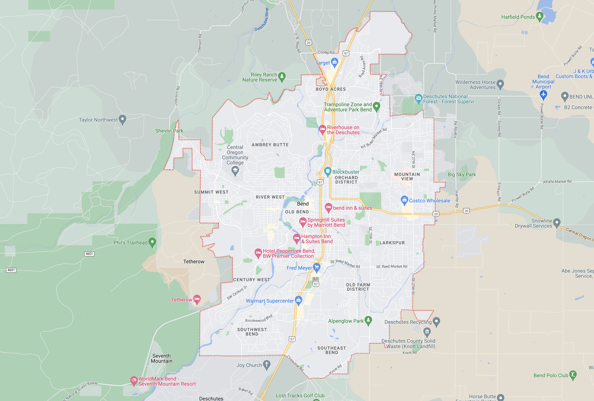

Welcome
I am an aspiring software engineer living in Bend, Oregon.
As I transition into this exciting career, I am interested in:
- Creating retail and small business websites
- Web3/Blockchain
- AI (Artificial Intelligence)
About Me
After graduating college with a B.A in Business Administration and a minor in Sustainability, I spent the next few years working as a teacher overseas and freelancing website projects.
I have been creating/managing small business websites for over 10 years using template website builders, now learning the codes and structures to take my work to the next level.
I am enrolled in the Thinkful's Software Engineering program to learn and master my coding skills. I plan to apply my knowledge and business background to work on meaningful projects in the fast-paced Web3 space. This will help to increase efficiency and sustainability in the modern world.
In my free time, I love to travel (55 countries and counting) and enjoy surfing, snowboarding, golf, hiking, and cooking. I approach life with a worldly view and can easily adapt to any situation I find myself in. I am also bilingual, speaking English and Spanish.
Get in Touch
I look forward to hearing from you! Please feel free to reach out with any job inquiries or questions.
